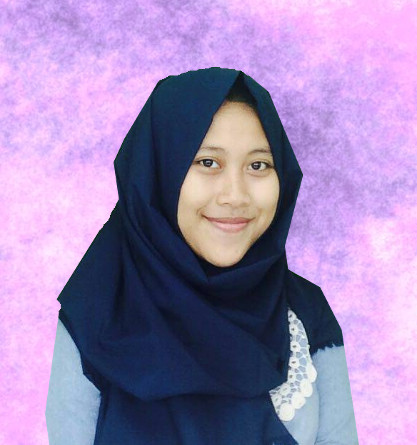

It's me F I N A
Hallo Guys!
My Profile!

;
- Nama : Fina Fatihah Darojatin
- Tempat, Tanggal Lahir : Bogor, 3 Maret 2001
- Hobi : Makan, Nulis, Tidur, Travelling
About Me
Hallo para pengunjung web ini, istilah mengatakan "Tak kenal maka tak sayang", oke kita kenalan dulu ya, Namaku Fina Fatihah Darojatin teman-teman biasa memanggil aku Fina, Ena, dll tetapi ayahku sampai saat ini masih memanggilku dengan panggilan "Delfi" lah coklat kali ya haha yaitulah karena akte kelahiranku salah harusnya namaku "Delfina Fatihah Darojatin", tetapi malah "Fina Fatihah Darojatin"oke gapapa, hehehe lahir di Bogor pada tanggal 3 Maret 2001. Aku si wanita berzodiak Pisces, heuheu. Aku anak ke-3 dari 3 bersaudara. Aku keturunan Sunda, sampai kalau aku ngomong dibilang logatku sangat terdengar haha padahal menurutku itu biasa saja heuheu.
Oiya aku tinggal bersama keluargaku, rumahku masih di sekitar Bogor hehe yaitu Bogor Kabupaten paling Barat wkwkwk tetapi semenjak sekolah di smakbo aku tinggal di kosan bersama teman-teman kosan. Smakbo benar-benar membuatku merasa berubah mulai dari sikap maupun prilaku HAHAHA.
PENDIDIKAN
Aku pernah bersekolah di TK. Raudhatul Faidzin, SDN Cicadas 01, SMPN 1 Cibungbulang dan saat ini aku sedang bersekolah di SMK-SMAK Bogor jurusan Chemical Analystdan Insya Allah akan melanjutkan kuliah di tempat yang saya inginkan.
HOBBY
1. Menulis
Aku sangat suka menulis, karena dengan menulis aku bisa mengeluarkan apa yang mengganjal di hati. Juga bisa menceritakan apa yang kita rasakan atau bahkan bisa dibuat cerpen. Hehehehe
2. Makan
Ya hahaha aku suka makan! liat kan badan aku kayak gimana, karena kalau kita lagi laper melakukan segala aktivitas pun tidak fokus heuheu jadi aku suka makaaaaan yaaaay!. Banyak banget makanan yang aku suka terutama buatan mamaku sendiri. Aku suka makan baik makanan berat ataupun makanan ringan, aku suka banget ngemil. Apalagi kalo ngerjain tugas malem-malem harus ada aja deh yang dicemilin heuheuheu
3. Travelling
Aku suka banget jalan-jalan hehe travel gitulaaah apalagi ke tempat yang berhubungan dengan alam ugh itu rasanya nikmat banget karena dengan kita travel itu bisa membuat otak kita lebih fresh hehe itu menurutku sih.